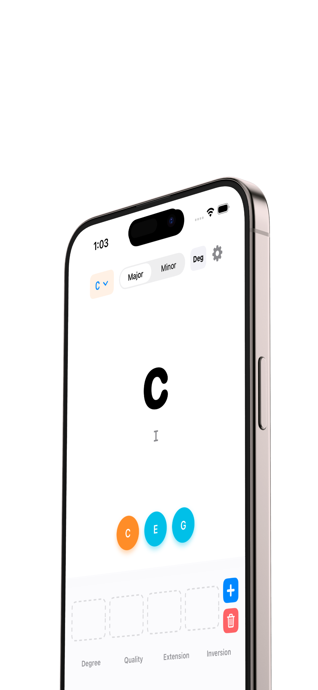
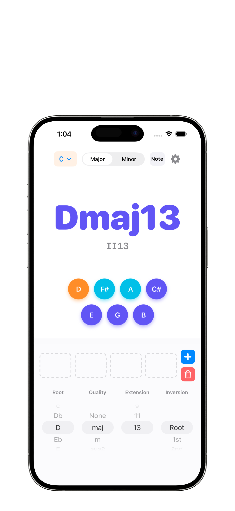
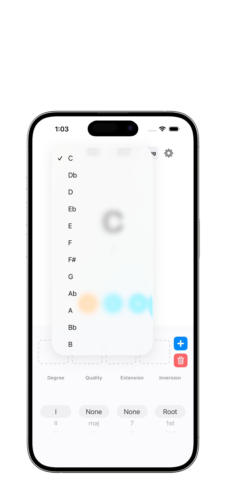
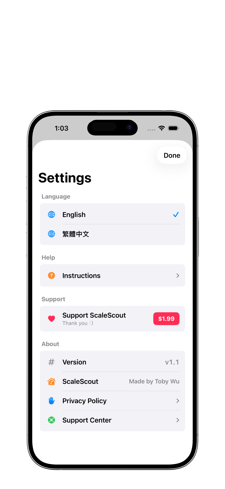

I
級數找和弦
選擇 I 到 VII，ScaleScout 會依照目前 key / mode 算出對應根音與和弦名稱，適合用級數寫 progression。
ScaleScout 把調性、級數、根音、和弦性質、延伸音、轉位與組成音放在同一個清楚畫面裡，讓你在寫歌、練琴或分析和聲時，馬上找到答案。


Core Features
ScaleScout 適合放在樂器旁、DAW 旁或課堂筆記旁。它的任務很明確：快速回答「這是什麼和弦」、「它是第幾級」、「它有哪些音」。
選擇 I 到 VII，ScaleScout 會依照目前 key / mode 算出對應根音與和弦名稱，適合用級數寫 progression。
直接選 C、D、Eb 等根音，App 會反推它在目前調性中的功能，包含 bII、#IV 這類變化音級。
支援 7、9、11、13，能快速查看高階和弦堆疊後的組成音，適合爵士、R&B、Neo-soul 與流行編曲。
Root、1st、2nd、3rd inversion 依和弦音數自動限制，並以 slash chord 顯示低音變化。
用顏色區分低音、基本和弦音與延伸音，初學者也能一眼理解 Cmaj9 或 Dm13 的音名結構。
最多儲存四個 chord slot，切換 key 或 mode 時自動移調，快速比較同一組進行在不同調上的結果。
從 12 個根音與 Major / Natural Minor 開始，建立當下的和聲語境。
Degree 模式適合創作 progression；Note 模式適合分析已知和弦在調性裡的位置。
None、maj、m、sus、dim、aug 與 7 到 13 的延伸音，能在同一個流程中快速試聽和聲想法。

Progression Sketchpad
四格軌道不是要取代完整編曲工具，而是讓你在手機上快速草擬 I - V - vi - IV、ii - V - I 或任何當下想到的和弦進行。
App Screens
截圖保留 App 原本的白色工具感，搭配黑色頁面空間與品牌色，讓產品畫面成為介紹頁的主角。

For Musicians
ScaleScout 不宣稱自動作曲，也不假裝是 DAW。它專注在一件事：讓和聲資訊變得更快、更清楚、更容易帶著走。
ScaleScout v1.1 · iPhone / iPad · iOS 17.0+ · Made by Toby Wu